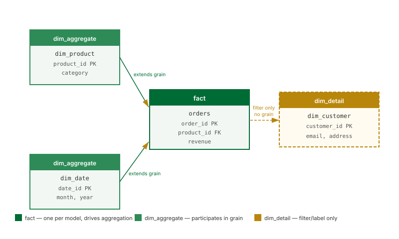

Sources, Tables, and Joins

What this covers
This article explains what a source is in Tessallite, how tables are classified within a model, how joins connect them, and why these classifications directly affect query routing and aggregate building.
Sources
A source is the data warehouse or query engine that a project connects to. Tessallite supports three source types: PostgreSQL, Google BigQuery, and Hadoop/Spark Thrift Server. The source connection is configured at the workspace level and is shared by all models in that workspace.
When you add a table to a model, you are selecting a table or view that exists in the connected source. Tessallite reads the schema from the source to populate column lists. The source itself is never modified. Pre-computed aggregate tables are written to a separate target schema, which may be in the same source or a different one.
The three table types
Every table added to a model is assigned one of three types. The type tells Tessallite how the table participates in aggregation and query routing.
| Type | Role | Participates in aggregate grain | Typical example |
|---|---|---|---|
fact | The primary transaction table. Drives the aggregate grain. Each model must have exactly one fact table. | Yes | orders, sales_events, page_views |
dim_aggregate | A dimension table whose columns may extend the aggregate grain. | Yes | dim_product, dim_date, dim_store |
dim_detail | A dimension table used for filtering and labelling only. Cannot define an aggregate grain. | No | dim_customer_contact, dim_employee_notes |
Use dim_detail sparingly. Any dimension drawn from a dim_detail table bypasses aggregates entirely. If a column is frequently used for grouping, its source table should be classified as dim_aggregate.
The fact table as primary table
Every model must have exactly one fact table. This is the central table from which all aggregates are built. Every join in the model connects either directly or transitively back to the fact table. If a model contains no fact table, the Health tab will surface a "Fact table missing" error and no aggregates can be built.
Joins
A join connects two tables within a model. Each join is defined by:
- Left table and left column — the column on the driving side of the join.
- Right table and right column — the column being joined to.
- Join type — either
LEFTorINNER.
Use INNER when every row in the fact table is guaranteed to have a matching row in the dimension table. Use LEFT when the dimension is optional.
LEFT JOIN dim_product
ON orders.product_id = dim_product.product_idJoins are not transitive by default. If you want to access a column from a table that is not directly joined to the fact table, you must define each join step explicitly.
If a column named in a join definition is later removed from the source schema, Tessallite will raise a "Join column not found" error in the Health tab after the next schema sync. The affected join must be updated or removed before aggregate builds resume.
Why table type matters for routing
When the Query Router evaluates an incoming query, it checks whether every GROUP BY column is drawn from a fact or dim_aggregate table. A column from a dim_detail table is not tracked in any aggregate grain, so the router cannot confirm a match and the query falls through to raw data.
Classifying a frequently-grouped column's source table as dim_detail instead of dim_aggregate silently prevents aggregate acceleration for all queries that include that column.